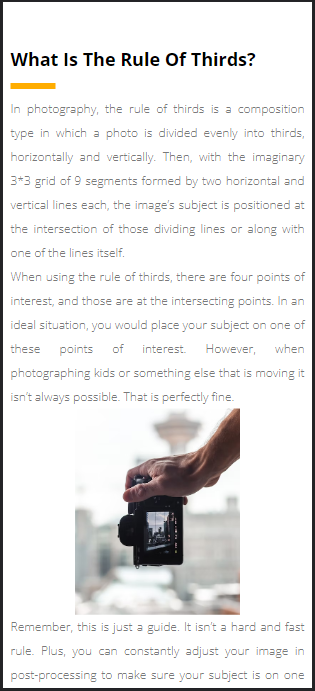
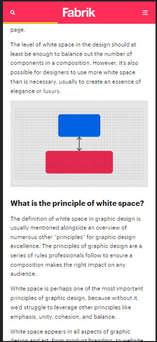
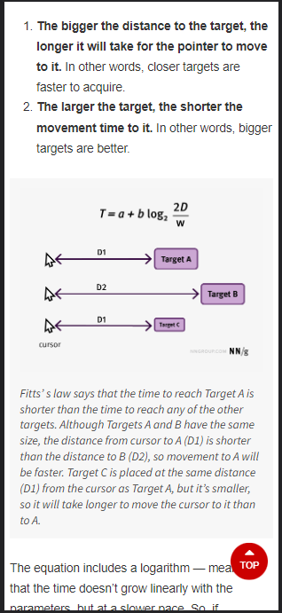

Rule of thirds
Nashhville Film Institute
This site indicates the steps to observe the rule of thirds; for example, it is distributed in the capture under this same rule.
Visit Nashhville Film InstituteWhite Space and Clean Design
Fabrik of Brands
This website gives us clear guidelines for the use of spaces in design in general. It gives us a broad perspective to take care of the details.
Visit Fabrik of BrandsFitt's Law
Nielsen Norman Group
Although this website is theoretical, it simply shows us the explanation of Fitt's law about where you can point on a mobile device or computer.
Visit Nielsen Norman Group